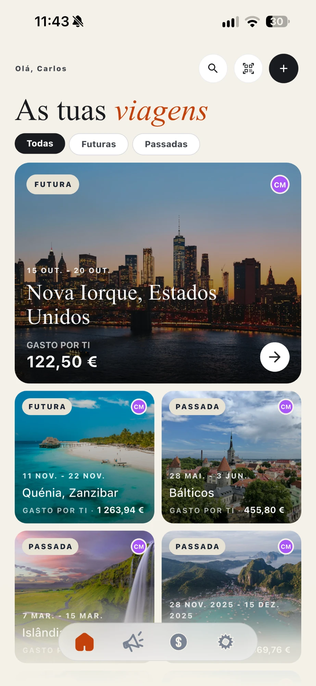
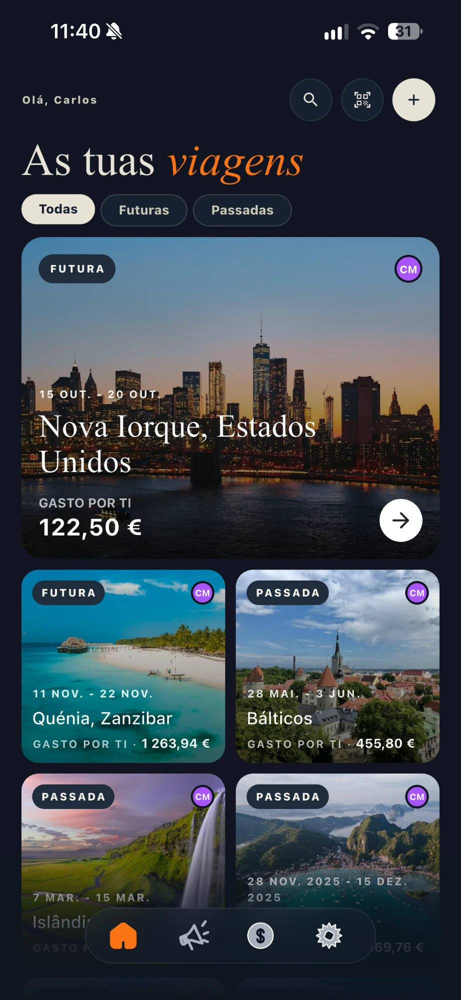
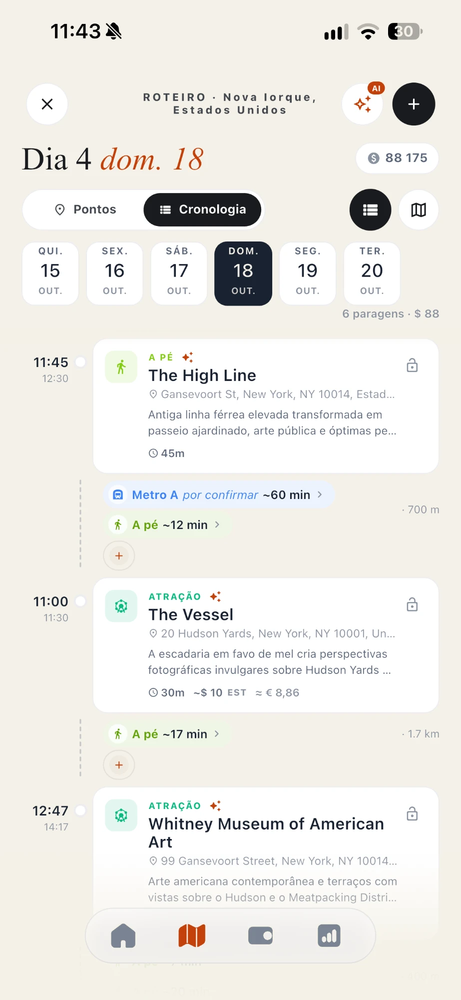
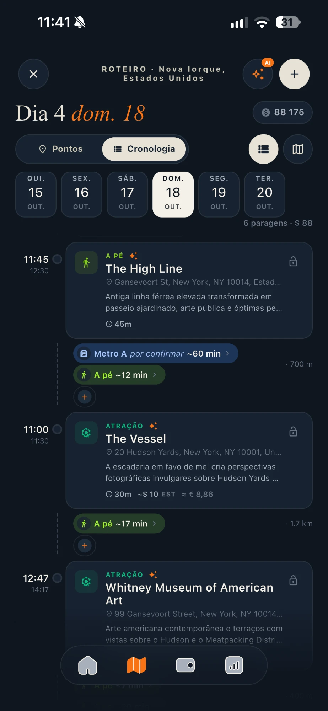
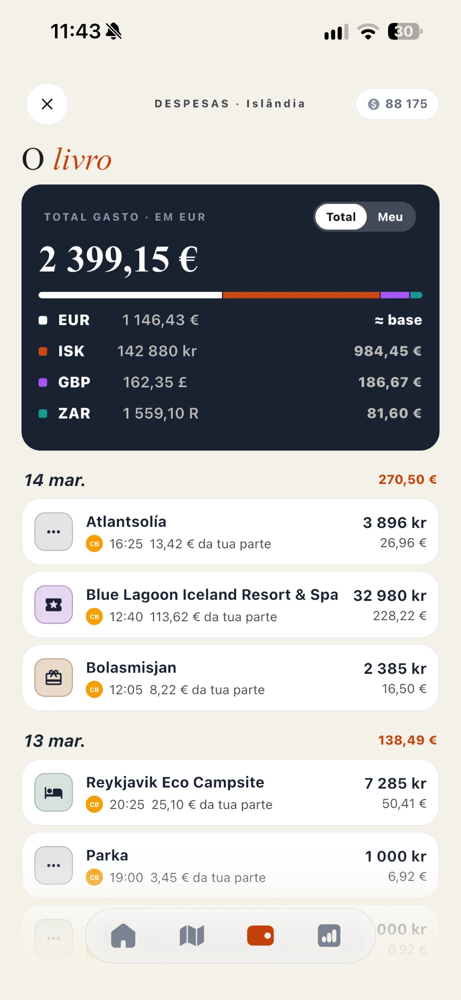
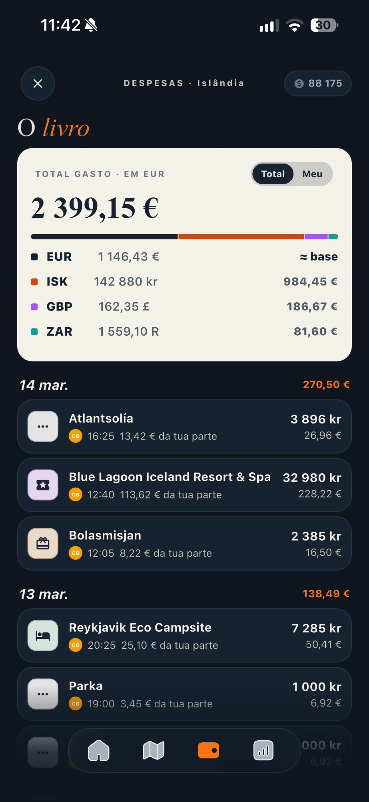

App de viagens para iOS e Android
Rota, roteiro e contas. Tudo na mesma viagem.
O TravelWise junta o que hoje anda espalhado por notas, emails e folhas de cálculo: as cidades e as noites, o plano de cada dia e quem pagou o quê. Partilhas com quem vai contigo, e o que já abriste continua a dar sem rede.
Grátis para descarregar. A AI de roteiros é opcional e funciona com créditos.


O que a app faz
Seis coisas que a app faz.
Sem promessas que a app não cumpre. Isto é o que está lá hoje.
- 01
Viagens com várias cidades
Monta a rota pela ordem certa, com as noites de cada cidade, como chegas (comboio, avião, autocarro, carro ou barco) e, se for o caso, o passe Interrail ou Eurail. Uma paragem de 0 noites é uma excursão de um dia.
- 02
Roteiro por dias
Cada dia é uma cronologia: pontos de interesse, refeições, horas e o caminho de uma paragem à seguinte.
- 03
Despesas e divisão
Regista gastos em qualquer moeda, divide em partes iguais ou por valores fixos, vê quem deve a quem e liquida o saldo. Podes importar extratos CSV do Revolut e do Wise.
- 04
Diário de viagem
Notas e fotografias de cada dia, guardadas com a viagem a que pertencem.
- 05
Partilha com quem vai
Convida por link ou código QR. Cada pessoa entra como colaborador, que edita, ou só para ver.
- 06
AI de roteiros, por créditos
Sugere pontos de interesse e organiza dias, com limites escritos. Mais abaixo dizemos o que faz e o que não faz.
O dia, hora a hora
O roteiro mostra o que vem a seguir e como lá chegas. Os trajetos entre paragens aparecem no próprio dia, com o meio e a duração.
- Pontos de interesse, refeições e trajetos
- Excursões de um dia a partir da cidade onde dormes
- Mudanças de cidade no dia certo da rota


As contas, sem discussões
Cada despesa sabe quem pagou e entre quem se divide. No fim, a app mostra os saldos e ajuda-vos a acertá-los.
- Várias moedas, com conversão
- Divisão igual ou por valor fixo
- Importação de extratos CSV do Revolut e do Wise


A AI de roteiros
O que a AI faz e não faz.
A AI escolhe de uma lista fechada de ações, cada uma com um ecrã e um preço. Pedidos fora da lista são recusados, e a app diz-te o passo seguinte.
Faz
- Sugere pontos de interesse para uma cidade, ou para todas as cidades da viagem de uma vez (um Interrail inteiro num só pedido).
- Sabe onde cada cidade fica na rota: numa paragem de dois dias, fica-se pelo essencial perto do centro e da estação.
- Organiza o roteiro, de um dia ou da viagem toda, com horas, refeições e o caminho de um ponto ao seguinte. Precisa de pelo menos 3 pontos de interesse.
- Põe no dia certo a viagem entre cidades, pelo meio que escolheste na rota, com a duração estimada pela distância.
- Durante a viagem, encontra restaurantes a poucos minutos a pé de onde estás. Sugere onde dormir num país sem cidades.
- Planeia até 31 dias num só pedido.
Não faz
- Não reserva nem compra nada, e não escreve no roteiro sem a tua escolha.
- Não sabe horários reais de comboios ou voos, lugares livres nem os preços do dia. O que dá são estimativas, e diz que o são.
- Não escolhe por ti como vais de uma cidade à outra. Sem meio escolhido, o troço fica por definir.
- Não organiza sem pontos de interesse: não inventa sítios para pôr por ordem.
- Não planeia mais de 31 dias, nem mais de 15 dias seguidos na mesma cidade, num só pedido.
- Não responde a pedidos em texto livre. As ações acima são tudo o que há.
Como funcionam os créditos
Os preços em créditos e os valores dos pacotes vêm sempre da própria app.
- Cada ação da AI tem um preço em créditos, que vês antes de confirmar.
- Quando a geração começa, os créditos ficam retidos. No fim, só pagas o que foi entregue. Se a geração falhar, os créditos voltam para ti.
- As contas novas recebem créditos de boas-vindas. Para teres mais, compras pacotes ou o Premium mensal dentro da app, através da App Store ou do Google Play.
- Os créditos servem só para a AI. Tudo o resto da app funciona sem eles.
Privacidade
Os teus dados, em três frases.
Sem anúncios
A app não tem publicidade nem SDKs de anúncios. Os dados de utilização servem para manter a app a funcionar e para a melhorar.
Apagas tudo a partir da app
Em Definições → Eliminar conta, a conta e os dados associados são apagados de forma permanente.
Um site sem rastreio
Este site não usa cookies nem analytics.